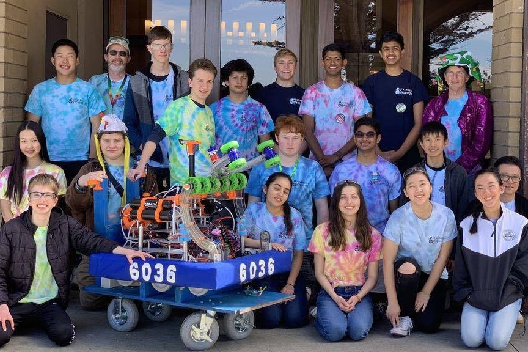
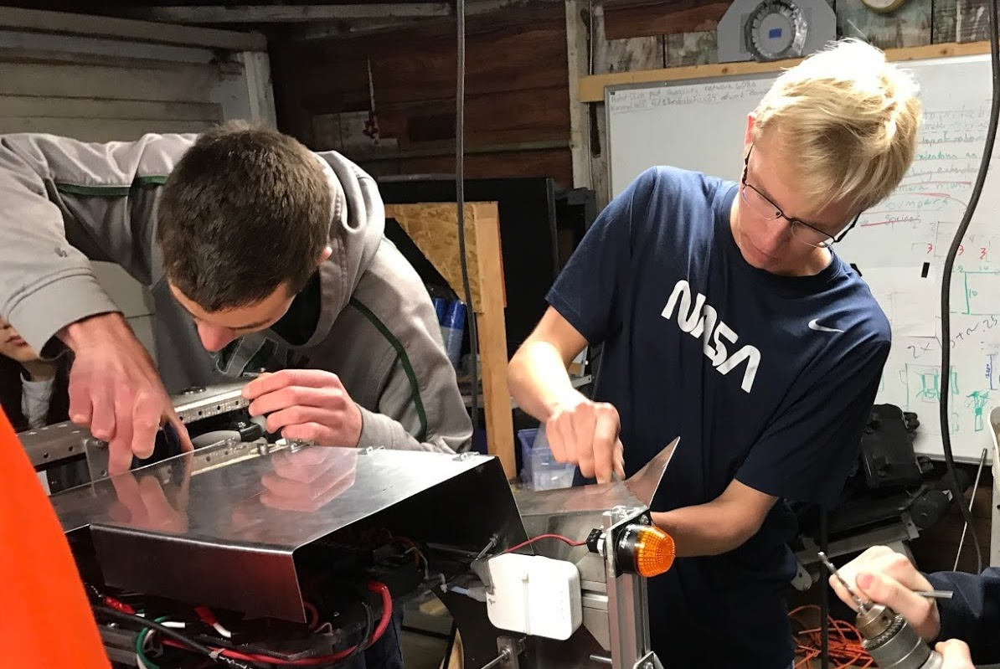

Sponsoring
What is Peninsula Robotics? We are a FIRST Robotics Competition (FRC) team, non-profit 501(c)(3)
organization, founded in 2015 in Palo Alto, California, the heart of Silicon Valley. Over the years, the
FRC teams at local high schools became increasingly overcrowded, therefore Peninsula Robotics was
founded to provide everyone who wanted to participate in robotics the chance to do so. At first, our
team consisted of 14 passionate members with a few mentors. However, after just four years, our team has
evolved into a close knit family consisting of over 35 members.


Unlike most FRC teams, we allow everyone in the group to participate in working on any “part” of the
robot. In other words, everyone is allowed to work on different divisions in the robotics team, whether
it’s mechanical, programming, or business. Another aspect that makes our team special
is that we are a community team rather than a high school-based team. This means that anyone interested
can join our FRC team, coming together with those with similar interests in robotics, creating an open
environment. Being a community team also shows how independent we are. As a community team, we have no
support from a school and must manage our finances ourselves.
In order to realize our plans for the future, we will need the support of generous donors. We need your
help to fund the team’s progress. Your donations, whether monetary or in-kind, will support the team in
a wide variety of ways, from securing tools and materials, funding outreach programs, and registering
for competitions. See our sponsor information packet for more.
- Peninsula Robotics
- Palo Alto Youth Robotics Association
- PAyouthRobotics@gmail.com
- 2320 Dartmouth St, Palo Alto 94306
- EIN: 47-5452651